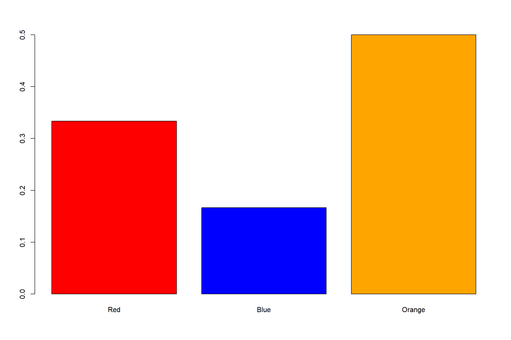

Lab 5
Probability
Before we can talk about inferential satistics we have to understand probability.
We all know, that if I toss a quarter in the air. There are only two possible options. Either the coin lands on heads, or it lands on tails.
By using the sample() function, we can tell R to randomly sample an event for us.
We ‘tossed’ a coin, and it landed on heads. What is the probability of this happening?
Probability is written as:
\[P(A) = \frac{1}{2} = .5000\]
In other words, the number of possible outcomes favorable to A divided by the total number of possible outcomes.
Let’s think about this in terms of playing cards:
In a standard card deck, there are 52 total cards:
- Two Colors: Red and Black
- Four Suits: Clubs, Hearts, Spades, Diamonds
- Card Values: 2,3,4,5,6,7,8,9,10,J,Q,K,A
What is the probability of picking a King of Hearts
\[P(King of Hearts) = \frac{1}{52}= .0192\]
What is the probability of picking a 10 of Hearts and a Nine of Hearts with replacement?
\[P(10 of Hearts) - P(9 of Hearts) \frac{1}{52}X \frac{1}{52} = .01923X .01923 = .00037\] What is the probability of picking a 10 of Hearts and a Nine of Hearts without replacement?
Ten_of_Hearts = 1/52
Ten_of_Hearts[1] 0.01923077Nine_of_Hearts = 1/52
Ten_of_Hearts*Nine_of_Hearts[1] 0.0003698225\[P(10 of Hearts) - P(9 of Hearts) \frac{1}{52}X \frac{1}{51} = .01923X .01961 = .00037\]
Ten_of_Hearts = 1/52
Ten_of_Hearts[1] 0.01923077Nine_of_Hearts = 1/51
Nine_of_Hearts[1] 0.01960784Ten_of_Hearts*Nine_of_Hearts[1] 0.0003770739In order to do work with some datasets, we need to know what they are composed of. So far we have many worked with numbers. If we were to look at string data. Also know as, character data, we can use a new command named which(). Additionally we can also use a workaround using something new: ==. A single = is an assignment operator.
myname = "David"
myname[1] "David"Two == represents a comparative operator. In other words, == assesses whether one variable is the exact same as another:
# The variable 'myname' is equal to David so this returns TRUE
myname == "David"[1] TRUE# It is NOT equal to 'Gaby' so it returns false
myname == "Gaby"[1] FALSE# As an added reference point != negates the comparison operator
myname != "Gaby"[1] TRUEThere are two different ways we can break-up our data.
We can use a command such as:
Proportioning Data
The below code will allow you to take a set of data and see what proportion is accounted for given a certain criteria.
For example: If I have a data set of 1’s and 0’s, how can I know how many I have of each. Additionally, how can I tell the proportion of each?
To do this we need to use the which()command as well as how much of the data is made up of 1’s and 0’s.
# Create the dataset
x=c(0,0,0,0,1,1,0,0,1,1,1,1,0,0,1,0,1,0,1,0,1,1,1,0,1,0,1)
x [1] 0 0 0 0 1 1 0 0 1 1 1 1 0 0 1 0 1 0 1 0 1 1 1 0 1 0 1[1] 14[1] 13length(x)[1] 27one + zero[1] 27one/length(x)[1] 0.5185185zero/length(x)[1] 0.4814815We can see here that the amount of 1’s is quite close to the amount of 0’s. Now let us try with a more involved example.
# Make a dataset of differnt colored marbles
d=c("red","red", "blue","orange", "orange","orange")
# Repeat this arrangement 20 times
x= rep(d,20)
# What is the length of x that contains "red"
rl=length(x[x=="red"])
rl[1] 40# What is the length of x that contains "blue"
rb=length(x[x=="blue"])
rb[1] 20# What is the length of x that contains "orange"
ro=length(x[x=="orange"])
ro[1] 60# How many colors do we have?
rl+rb+ro [1] 120# How many colors do we have(easy way)?
xl=length(x)
xl[1] 120# What is the prportion of red compared to the entire dataset
rp=rl/xl
rp[1] 0.3333333# What is the prportion of blue compared to the entire dataset
bp=rb/xl
bp[1] 0.1666667# What is the prportion of orange compared to the entire dataset
op=ro/xl
op[1] 0.5# Draw a barplot with these different proportions
barplot(c(rp,bp,op),
col=c("red","blue","orange"),
names.arg=c("Red","Blue", "Orange"))
rnorm()
In most, if not all of my slides, you have seen me use the function rnorm(). In class, I’ve used this as a way to generate large sets of data with one line of text. There are a few arguments that are necessary in order to take this function and use it for the purposes of sampling.
rnorm() stands for “Random Normal”. Essentially, what rnorm() does it create a random set of numbers (specified by you) and generates data. pulled from a normal distribution.
Here are the arguments rnorm() accepts:
n: Specifies the number of data points you want to create.mean: Specifies the mean you want your sample to have.sd: Specifies the standard deviation you want your sample to have.
Although not essential, a nice function to use is round(digits = 0)
- This function makes your data look a little bit neater, you will see that when we create a sample from
rnorm()the numbers are a little messy.
So, let’s make a sample of 20 numbers with a mean of 12 and a standard deviation of 3.
x = rnorm(20,12,3)
x [1] 10.493423 12.394593 11.763249 14.660354 12.350914 12.955890 10.254628
[8] 14.143598 9.524222 10.920414 12.269658 12.288823 11.395098 14.219521
[15] 12.370139 11.912050 10.833437 13.532569 9.258557 18.930890See how the numbers came out a little unwieldy? Let’s fix that:
[1] 10.69 14.29 12.79 14.32 9.56 10.68 9.84 12.69 8.53 12.74 11.73 17.27
[13] 11.59 11.67 9.93 11.33 12.55 13.25 15.20 14.91Notice how the digits= command is preceded by a comma. This is because it is a part of the round() function but not a part of the rnorm() function.
We can specify the mean and the standard deviation of the dataset, but does introducing the variability of the standard deviation make it harder for the mean to be exactly what we asked for? Let’s see!
Sampling
We can have our dataset of 100 points, but if we take a sample of that data, how representative will it be of the true mean?
Let’s take a look:
# For reproduible examples
set.seed(11)
# Create a sample of 10,000 with a mean of 10 and standard deviation of 10
x=round(rnorm(10000,10,15),digits = 2)
# Sample 1000
s1=sample(x,1000)
# Sample 100
s2=sample(x,100)
# Sample 10
s3=sample(x,10)
mean(s1)[1] 10.41259mean(s2)[1] 11.3497mean(s3)[1] 12.371mean(x)[1] 10.17055Do you see how it becomes difficult to tell a certain property of a random sample when you only have small sample to use?